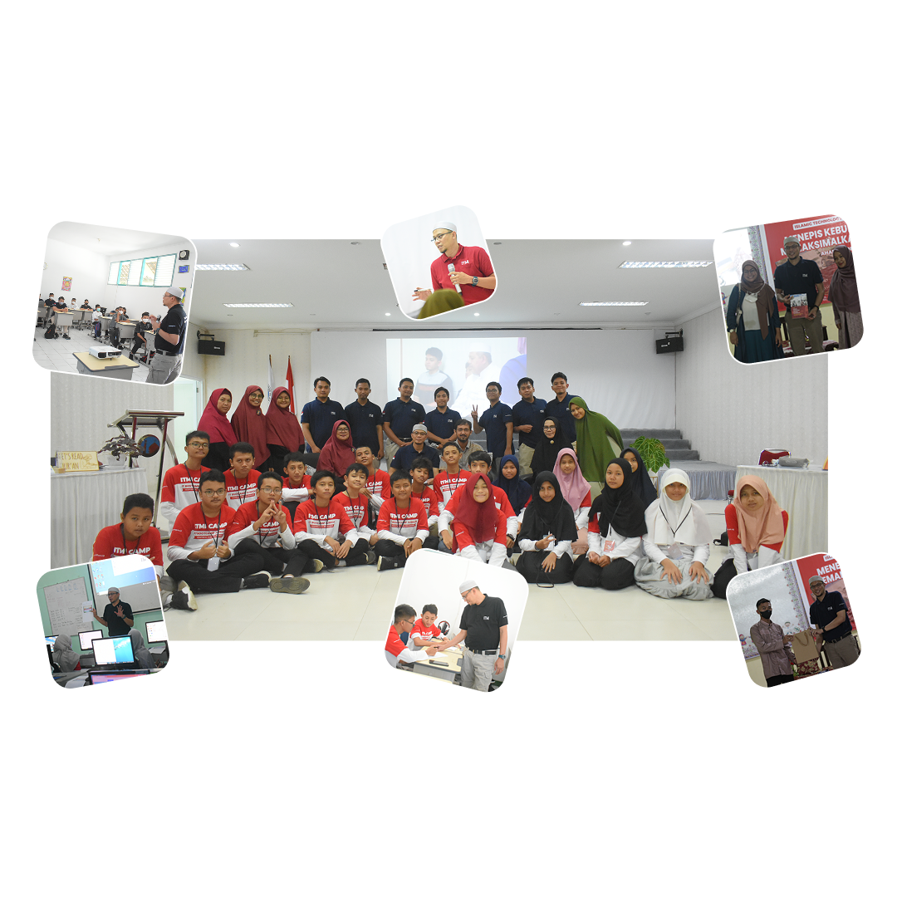

Bangun Generasi Hebat di Era Digital
Teknologi adalah ladang peluang — tapi hanya bisa dipanen oleh generasi yang siap.
Seri Buku Teknologi hadir untuk membekali anak-anak kita dengan nilai Islam, semangat inovasi, dan keterampilan masa depan. Mulai dari sejarah ilmuwan Muslim hingga proyek digital yang seru — semua dirancang agar mereka tak hanya jadi pengguna, tapi pencipta perubahan.
